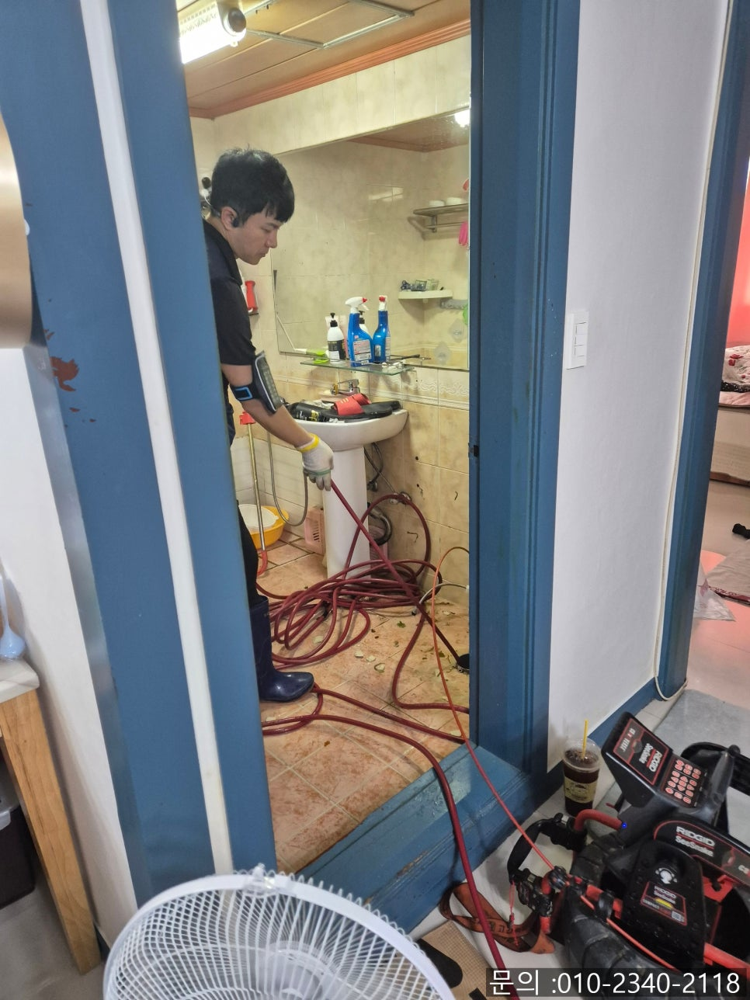
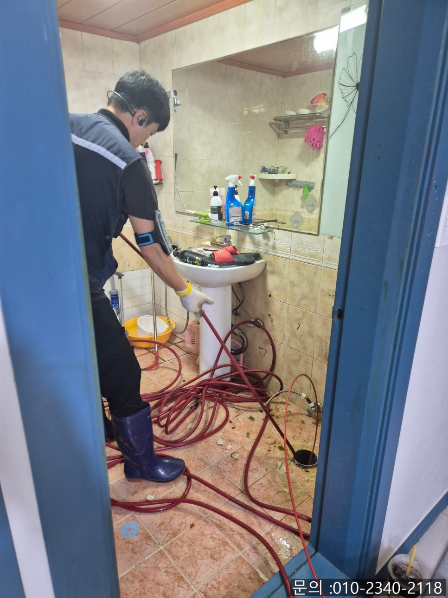
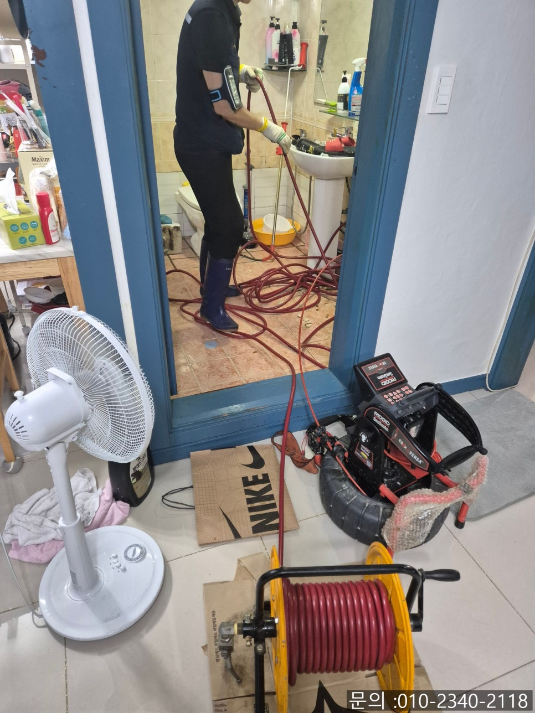
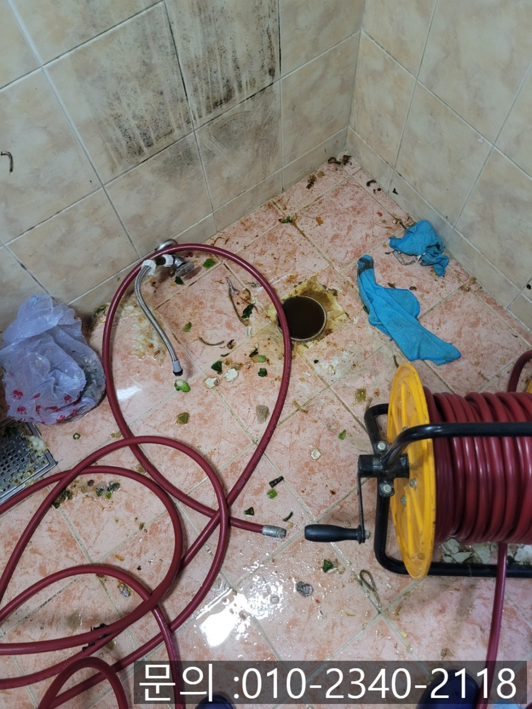
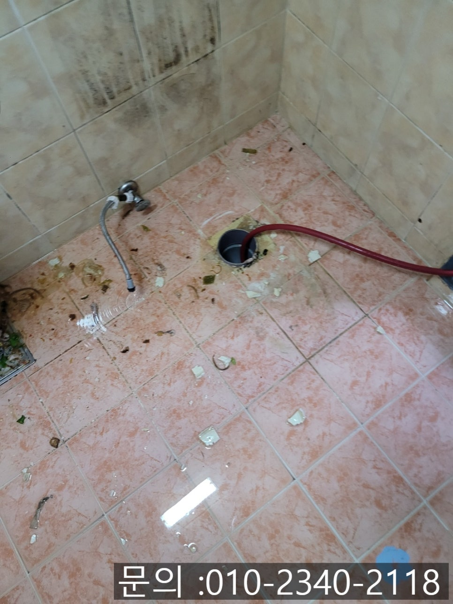
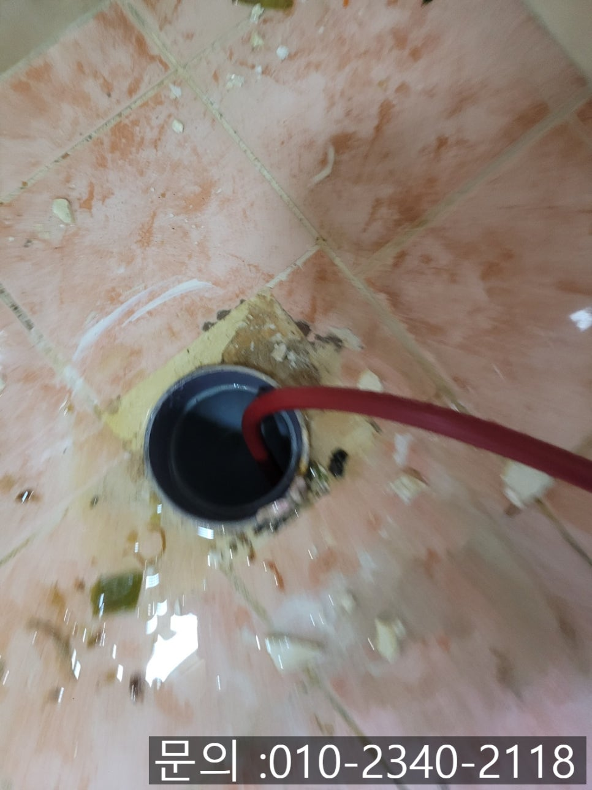

🏠 모현면 하수구 막힘 용인 포곡읍 오수관 뚫는 해결 전문 업체
용인 처인구 변기막힘 전문 시공 후기

📋 작업 개요
- 위치: 용인 처인구, 처인구, 용인
- 서비스 유형: 변기막힘, 하수구막힘, 배관막힘, 맨홀막힘, 역류해결, 뚫는업체, 배관청소, 고압세척
- 작업 일시: 2025. 8. 6. 9:10
- 업체명: 하수구수사대 (010-5615-2118)
🔍 문제 상황
안녕하세요.
용인 포곡읍 오수관 뚫는 해결 전문 업체 에스원 설비입니다.
우리가 일상생활에서 꼭 필요한 시설 중 하나가 바로 변기입니다. 인간의 생리현상과 밀접하게 관련이 있어서 배관 구조 또한 일반 하수구보다 더 견고하게 설계되어 있는데요.
변기 아래에 연결되어 있는 배관을 오수 배관이라고 한답니다. 오수관은 생활에서 발생하는 오염수를 처리하기 위해 중요한 배관이기 때문에 사용과 관리에 각별한 주의가 필요해요.

🔎 원인 분석
💡 전문가 진단: 정밀 진단 장비를 사용하여 슬러지의 고착 여부를 판명하고 타격/세척 작업을 실시했습니다.
변기를 사용할 때는 물에 잘 녹는 전용 화장지를 사용하는 것이 기본입니다. 그런데 실수로 물티슈나 위생용품, 플라스틱, 장난감 등 딱딱한 이물질이 안으로 흘러들어가게 되면 이런 것들이 오수 배관에 걸리거나 쌓이면서 막힘이 발생하게 됩니다.
이번에 방문하게 된 현장은 모현면 하수구 막힘 현장이었어요. 고객님께서는 변기 물이 잘 내려가지 않고 역류까지 반복되자, 스스로 해결해 보시기 위해 뚫어 뻥을 사용해 보셨고, 옷걸이까지 이용하여 이물질을 밀어내 보려고 해보셨지만, 해결되지 않았다고 하셨어요.
모현면 하수구 막힘 현장에 도착해 보니, 변기 내부 물이 완전히 고여 있었고 악취도 심하게 나는 상태였어요.
곧바로 내시경 장비를 통해 변기 내부를 살펴본 결과, 물티슈와 머리카락 각종 생활 쓰레기들이 한데 엉켜 입구를 거의 막고 있는 것을 확인할 수 있었어요.

🔧 작업 과정
이대로는 작업이 어려웠기 때문에 변기를 탈거한 후 전문 장비를 이용해 작업하는 방식으로 결정하였어요.
우선 전동 스프링 장비로 1차적으로 통수 작업을 진행했어요. 물길이 확보된 틈을 따라 고압세척 장비를 진입시켜 내부에 굳어 있는 이물질을 강한 수압으로 밀어내는 방식으로 작업을 이어갔어요.
동시에 건물 외부에 연결된 오수 맨홀까지 물이 잘 빠지는지를 확인하면서 전체적인 배수 흐름을 체크했습니다. 막힌 이물질들이 제거되면서 탈거된 변기 주변으로 찌꺼기와 악취가 함께 역류해 나오는 모습도 육안으로 확인할 수 있었어요.
무더운 날씨에 악취까지 더해진 쉽지 않은 작업 환경이었지만, 끝까지 포기하지 않고 반복적으로 청소 작업을 이어간 결과 하수구가 시원하게 뚫리게 되었습니다.
변기가 막힘은 겉으로 보기엔 단순해 보여도 오수관 막힘까지 이어지는 영향일 수 있어요. 무리하게 스스로 해결하려다가 더 큰 손상과 피해를 입을 수 있기 때문에 정확하게 원인을 파악하고 전문 장비를 갖춘 용인 포곡읍 오수관 뚫는 해결 전문 업체인 에스원 설비의 도움을 받아 해결하시길 바랄게요.
에스원 설비는 현장마다 다른 상황에 맞춰 맞춤형 원인 파악 전문 장비 활용 완벽한 마무리까지 책임지고 도와드립니다.


✅ 작업 완료
모현면 하수구 막힘, 오수관 막힘으로 고민하고 계시다면 신속하고 믿을 수 있는 전문가인 에스원 설비에 언제든지 문의하세요!
경기도 용인시 처인구 중부대로1313번길 20-25 인상빌딩 202호 나31




⚠️ 하수구 배관 막힘 예방 및 관리 가이드
- ✅ 머리카락, 비닐, 물티슈 등 물에 분해되지 않는 이물질은 하수구 유입을 절대 금지해 주세요.
- ✅ 하수구 거름망을 씌우고 모여진 이물질은 주기적으로 쓰레기통에 바로 비워주셔야 합니다.
- ✅ 배관 노후가 심할 경우 이물질이 더 쉽게 걸리므로 주기적인 배관 세척(고압세척 등)을 권장합니다.
- ✅ 작업 후 1년 이내 재발 시 하수구수사대에서 무상 A/S 보증 서비스를 제공합니다.
💡 핵심 정리
- 확실한 장비 작업(내시경 점검 및 샤프트 스케일링)으로 원인을 뿌리 뽑습니다.
- 작업 후 1년 이내에 동일한 부위 재발 시 100% 무상 A/S 서비스를 보장합니다.
- 서울 · 경기 · 인천 전 지역에 24시간 언제든 긴급 출동할 수 있도록 항시 대기 중입니다.
❓ 자주 묻는 질문 (FAQ)
🚨 용인 처인구 변기막힘 문제로 고민이신가요?
정확한 원인 진단과 확실한 시공으로 재발 없는 해결을 약속드립니다.
24시간 긴급 출동 | 서울 · 경기 · 인천 전지역 | 1년 내 재발 시 무상 A/S